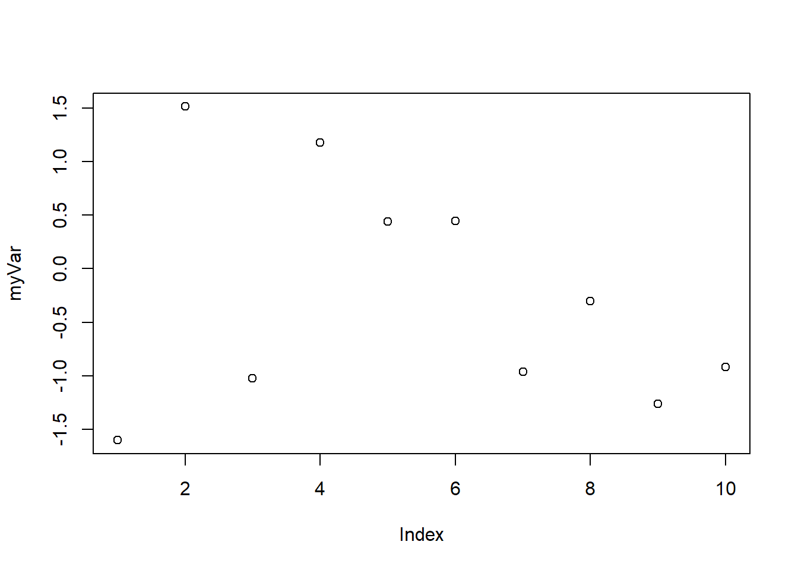
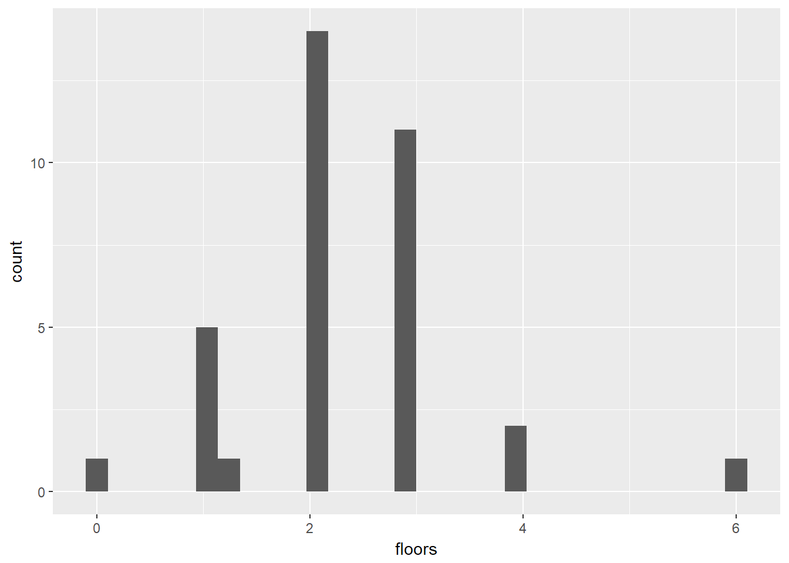

R fundamentals
Locke Data
1 About R
1.1 R
- Open source language written in 2001
- Backwards compatible with commercial but out of support language S(plus)
myVar <- rnorm(10)
plot(myVar)
1.2 Things to keep in mind
- R works in-memory
- R works on a single processor
- R is basically very old and so quirky
- R is case-sensitive
- For later “There’s a package for that”
1.3 Alt-R
As R is open source, there are some commercial implementations of R:
- Microsoft R Server
- TIBCO TERRE
- Oracle
1.4 Why use R
- Great for stats and data viz
- Super extendable
- Use lots of other languages through it
1.5 Why use R
# A demo of dynamic CSV processing
list.files("../data", full.names = TRUE) %>%
map_df(read_csv, col_types=cols("c")) %>%
bind_rows() ->
allmydata## Warning: Unnamed `col_types` should have the same length as `col_names`.
## Using smaller of the two.## Warning in rbind(names(probs), probs_f): number of columns of result is not
## a multiple of vector length (arg 1)## Warning: 30 parsing failures.
## row # A tibble: 5 x 5 col row col expected actual file expected <int> <chr> <chr> <chr> <chr> actual 1 1 <NA> 1 columns 6 columns '../data/csv1.csv' file 2 2 <NA> 1 columns 6 columns '../data/csv1.csv' row 3 3 <NA> 1 columns 6 columns '../data/csv1.csv' col 4 4 <NA> 1 columns 6 columns '../data/csv1.csv' expected 5 5 <NA> 1 columns 6 columns '../data/csv1.csv'
## ... ................. ... .................................................... ........ .................................................... ...... .................................................... .... .................................................... ... .................................................... ... .................................................... ........ ....................................................
## See problems(...) for more details.## Warning: Unnamed `col_types` should have the same length as `col_names`.
## Using smaller of the two.## Warning in rbind(names(probs), probs_f): number of columns of result is not
## a multiple of vector length (arg 1)## Warning: 40 parsing failures.
## row # A tibble: 5 x 5 col row col expected actual file expected <int> <chr> <chr> <chr> <chr> actual 1 1 <NA> 1 columns 6 columns '../data/csv2.csv' file 2 2 <NA> 1 columns 6 columns '../data/csv2.csv' row 3 3 <NA> 1 columns 6 columns '../data/csv2.csv' col 4 4 <NA> 1 columns 6 columns '../data/csv2.csv' expected 5 5 <NA> 1 columns 6 columns '../data/csv2.csv'
## ... ................. ... .................................................... ........ .................................................... ...... .................................................... .... .................................................... ... .................................................... ... .................................................... ........ ....................................................
## See problems(...) for more details.## Warning: Unnamed `col_types` should have the same length as `col_names`.
## Using smaller of the two.## Warning in rbind(names(probs), probs_f): number of columns of result is not
## a multiple of vector length (arg 1)## Warning: 35 parsing failures.
## row # A tibble: 5 x 5 col row col expected actual file expected <int> <chr> <chr> <chr> <chr> actual 1 1 <NA> 1 columns 6 columns '../data/csv3.csv' file 2 2 <NA> 1 columns 6 columns '../data/csv3.csv' row 3 3 <NA> 1 columns 6 columns '../data/csv3.csv' col 4 4 <NA> 1 columns 6 columns '../data/csv3.csv' expected 5 5 <NA> 1 columns 6 columns '../data/csv3.csv'
## ... ................. ... .................................................... ........ .................................................... ...... .................................................... .... .................................................... ... .................................................... ... .................................................... ........ ....................................................
## See problems(...) for more details.1.6 Why use R
# Same chart different data
readFun<-function(x){
x %>%
read_csv() %>%
mutate(floors=as.numeric(`The number of floor/stories your residence has`))
}
p<- ggplot(readFun("../data/csv1.csv"), aes(x=floors)) +
geom_histogram() ## Parsed with column specification:
## cols(
## Timestamp = col_character(),
## `Your first name` = col_character(),
## `Your favourite ice cream flavour` = col_character(),
## `Your pet's name (with multiple pets, pick the oldest or your favourite)` = col_character(),
## `The number of floor/stories your residence has` = col_character(),
## `The year you were born in (YYYY)` = col_character()
## )## Warning in evalq(as.numeric(`The number of floor/stories your residence
## has`), : NAs introduced by coercionp %+% readFun("../data/csv3.csv")## Parsed with column specification:
## cols(
## Timestamp = col_character(),
## `Your first name` = col_character(),
## `Your favourite ice cream flavour` = col_character(),
## `Your pet's name (with multiple pets, pick the oldest or your favourite)` = col_character(),
## `The number of floor/stories your residence has` = col_double(),
## `The year you were born in (YYYY)` = col_character()
## )## `stat_bin()` using `bins = 30`. Pick better value with `binwidth`.